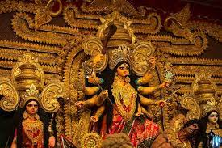
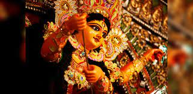
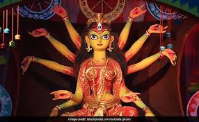
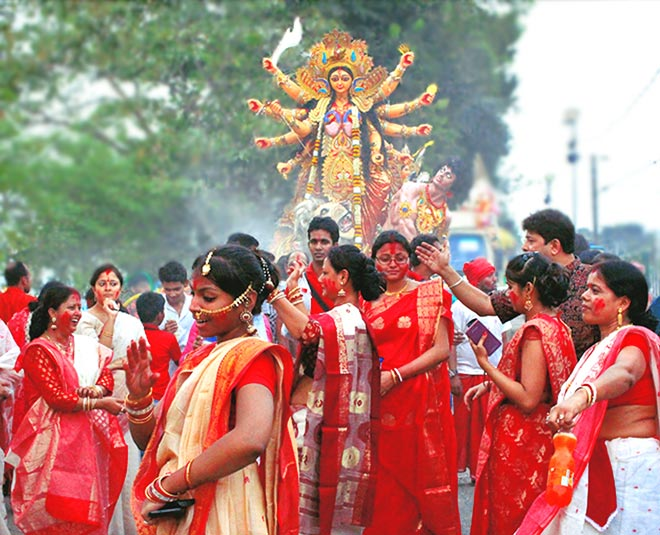

|  |
Durga Puja, also known as Durgotsava, or Sharodotsava (pronounced [dʊrɡoːtsəʋə]), is an annual Hindu festival originating in the Indian subcontinent which reveres and pays homage to the Hindu goddess, Durga.[2][3] It is particularly popular and traditionally celebrated in the Indian states of West Bengal, Bihar, Assam, Odisha, Tripura and the country of Bangladesh, and the diaspora from this region, and also in Mithilanchal regions of Bihar and Nepal. The festival is observed in the Indian calendar month of Ashwin, which corresponds to the months of September–October in the Gregorian calendar,[4][5] and is a ten-day festival,[6][2] of which the last five are of significance.[7][5] The puja is performed in homes and in the public, the latter featuring temporary stage and structural decorations (known as pandals). The festival is also marked by scripture recitations, performance arts, revelry, gift giving, family visits, feasting, and public processions.Durga puja is an important festival in the Shaktism tradition of Hinduism. |
As per Hindu scriptures, the festival marks the victory of goddess Durga in her battle against the shape-shifting asura, Mahishasura.[13][14][A] Thus, the festival epitomises the victory of good over evil, though it is also in part a harvest festival celebrating the goddess as the motherly power behind all of life and creation. Durga puja coincides with Navaratri and Dussehra celebrations observed by other traditions of Hinduism,[18] in which the Ram lila dance-drama is enacted, celebrating the victory of Rama against Ravana, and effigies of Ravana are burnt.[19][20] The primary goddess revered during Durga puja is Durga but celebrations also include other major deities of Hinduism such as Lakshmi (the goddess of wealth and prosperity), Saraswati (the goddess of knowledge and music), Ganesha (the god of good beginnings), and Kartikeya (the god of war). In Bengali and Odia traditions, these deities are considered to be Durga's children and Durga puja is believed to commemorate Durga's visit to her natal home with her beloved and nice children. The festival is preceded by Mahalaya, which is believed to mark the start of Durga's journey to her natal home. |
 |
|  |
Primary celebrations begin on the sixth day (Shasthi), on which the goddess is welcomed with rituals. The festival ends on the tenth day (Vijaya dashami), when devotees embark on a procession carrying the worshipped clay sculpture-idols to a river, or other water body, and immerse them, symbolic of her return to the divine cosmos and her marital home with Shiva in Kailash. Regional and community variations in celebration of the festival and rituals observed exist. Durga puja is an old tradition of Hinduism,though its exact origins are unclear. Surviving manuscripts from the 14th—century provide guidelines for Durga puja, while historical records suggest that the royalty and wealthy families were sponsoring major Durga puja festivities since at least the 16th-century.The prominence of Durga puja increased during the British Raj in the provinces of Bengal, Odisha and Assam. In today's time, the importance of Durga puja is as much as a social and cultural festival as a religious one, wherever it is observed. |
As per Hindu scriptures, the festival marks the victory of goddess Durga in her battle against the shape-shifting asura, Mahishasura.[13][14][A] Thus, the festival epitomises the victory of good over evil, though it is also in part a harvest festival celebrating the goddess as the motherly power behind all of life and creation. Durga puja coincides with Navaratri and Dussehra celebrations observed by other traditions of Hinduism,[18] in which the Ram lila dance-drama is enacted, celebrating the victory of Rama against Ravana, and effigies of Ravana are burnt.[19][20] In West Bengal, Odisha, Assam, and Tripura, Durga puja is also called Akalbodhan (literally, "untimely awakening of Durga"), Sharadiya pujo ("autumnal worship"), Sharodotsab ("festival of autumn"), Maha pujo ("grand puja"), Maayer pujo ("worship of the Mother"),[citation needed] Durga pujo,[24] or merely Puja or Pujo. In Bangladesh, Durga puja has historically been celebrated as Bhagabati puja.[citation needed] Maa Durga is known as the Goddess of Power (feminine) which represents triumph of Goodness over evil.Maa Durga had 108 names. |
 |